Need help with rosacea?
If you are suffering from rosacea and would like to consult with one of our highly experienced dermatologists, get in touch with us now. You can also call us on 0207 467 3720.
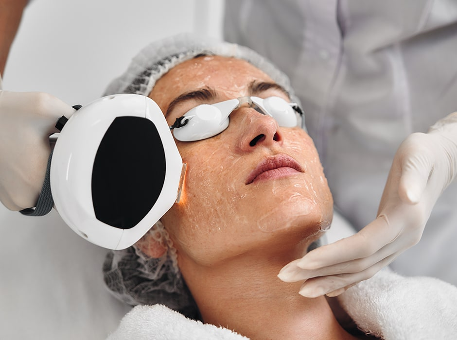
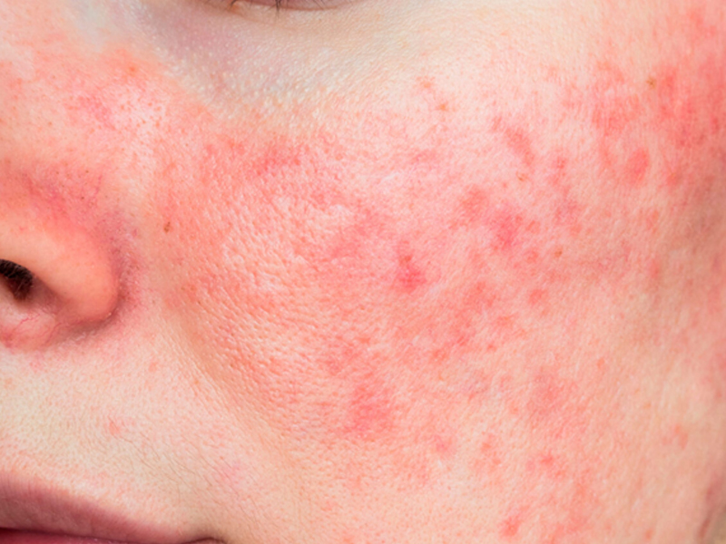
Rosacea is a common skin rash involving the central part of the face. It is a long-term skin condition that usually starts with episodes of flushing, followed by persistent redness on the cheeks, forehead, chin, and nose. Papules (small red bumps) can appear in the affected areas, as well as telangiectasia (small dilated blood vessels) that look like thin red streaks. The condition tends to affect women more than men and is also more common in those with fair skin.
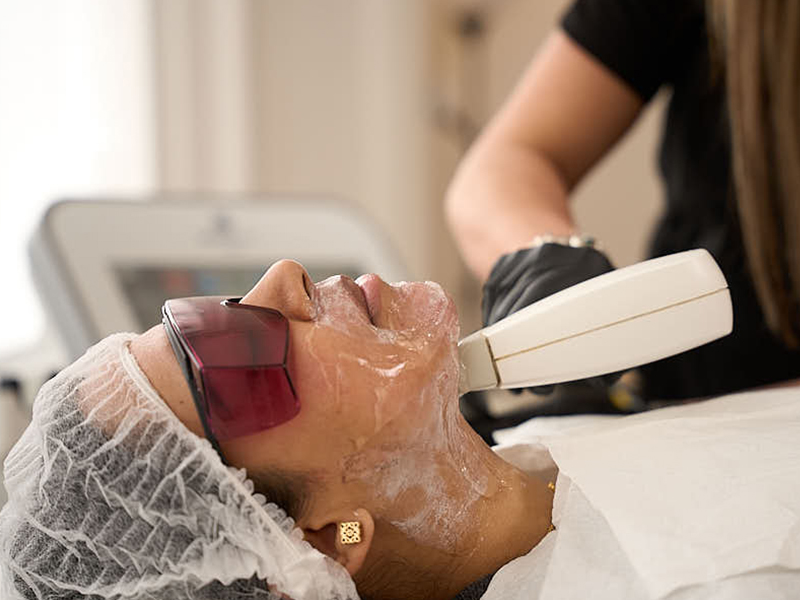
Although the cause of rosacea is not well understood, many experts believe it is due to a defect in the blood vessels in the skin of the face. These blood vessels dilate too easily, causing the skin to appear flushed. Other factors such as genetics, bacteria on the skin, and environmental influences may also play a role. People with rosacea flush easily and develop redness, pimples, and thread veins on their cheeks, nose, and forehead. It is a common condition affecting around 10% of adults. To properly assess your situation, we recommend consulting with one of our experienced dermatologists. If you are seeking rosacea treatment in London, get in touch with our rosacea clinic today.
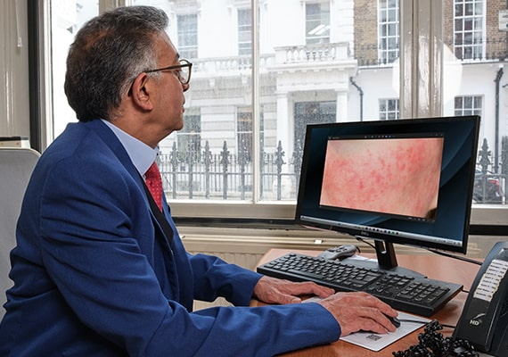
As rosacea affects the face it can cause significant psychological problems. The unpredictable flushes can be mistaken for excess alcohol intake. Many people with rosacea find that the rash on their face causes them embarrassment and anxiety. Flare ups of rosacea can be controlled by antibiotic lotions or tablets as well as avoiding certain foods and beverages and sunlight. The better active flare ups are controlled the fewer thread veins are left behind. We treat the redness and broken veins of rosacea with Intense Pulse Light (IPL) using the Lumenis One machine. This delivers a pulse of red light to reduce the redness and the broken blood vessels enabling them to heal up and fade away.

Although the cause of rosacea is not well understood, many experts believe that it is due to a defect in the blood vessels in the skin of the face. These blood vessels dilate too easily causing the skin to appear flushed. Other factors such as genetics, bacteria on the skin and environmental factors may also play a part. People with rosacea flush easily and develop redness, pimples and thread veins on their cheeks, nose and forehead. It is a common condition affecting around 10% of adults.

As rosacea affects the face it can cause significant psychological problems. The unpredictable flushes can be mistaken for excess alcohol intake. Many people with rosacea find that the rash on their face causes them embarrassment and anxiety. Flare ups of rosacea can be controlled by antibiotic lotions or tablets as well as avoiding certain foods and beverages and sunlight. The better active flare ups are controlled the fewer thread veins are left behind. We treat the redness and broken veins of rosacea with Intense Pulse Light (IPL) using the Lumenis One machine. This delivers a pulse of red light to reduce the redness and the broken blood vessels enabling them to heal up and fade away.
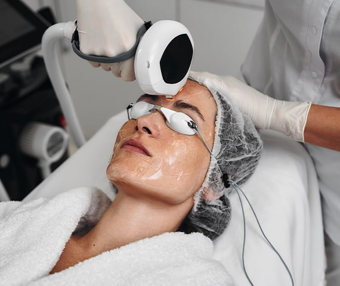
IPL stands for Intense Pulsed Light. IPL is a safe and effective treatment of rosacea as well as reducing unwanted hair, rejuvenating skin and for treating other conditions such as broken thread veins and spider naevi. The IPL treatment is a type of light therapy that utilises a range of wavelengths to target the pigments in blood vessels and hairs. The energy provided by these wavelengths is taken up by the darker pigments in blood vessels making the IPL treatment suitable for the reduction of rosacea. The IPL laser is also a very popular skin rejuvenation treatment and one of our most popular anti-aging treatments due to its gentle nature and the little to no downtime associated with the procedure.
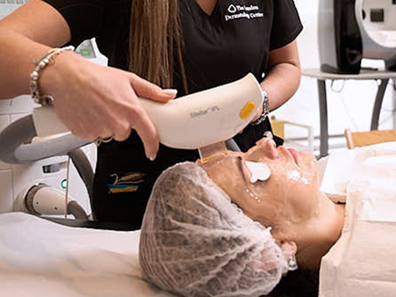
You will be asked to keep your face as pale as possible by avoiding sun exposure before and during your course of treatment. At your first visit you can discuss the pros and cons of IPL treatment and a patch test can be performed to check the reaction of your skin. On the first treatment the treatment head is passed over the whole of the affected area will be treated, except in men where the beard area is avoided.
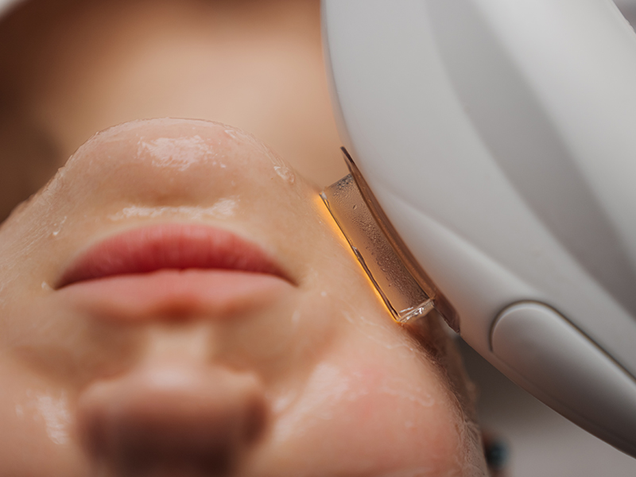
There is a feeling of heat during the treatment and your face will be redder for a short while afterwards. Cooling packs can be applied afterwards to sooth any residual heat. You’ll be asked to wear some goggles to protect your eyes from the light of the IPL machine and then your treatment will begin. A course of 4-6 treatments at 4-week intervals produces the most benefit. Improvement may continue for many weeks after the course has finished. Rosacea is a relapsing condition and this treatment improves the appearance but does not cure the rosacea.
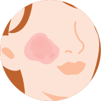
It is believed that IPL has two actions that help in rosacea. Firstly, the red thread veins absorb a specific range of wavelengths delivered by the treatment head. This energy makes them hot and damages the thread veins. This damage encourages the body to reabsorb them, improving the appearance and reducing redness. Secondly, the light energy warms the collagen fibres in the skin. This stimulates the production of new collagen and collagen remodelling which in turn, improves the support of the small blood vessels which helps to delay the development of more thread veins. It also improves the skin's elasticity, texture and can help to reduce fine lines and wrinkles. The Lumenis One IPL machine used at The London Dermatology Centre comes with a range of heads and filters that are treatment-specific. This allows our experienced team to deliver an individually tailored treatment according to your skin type.
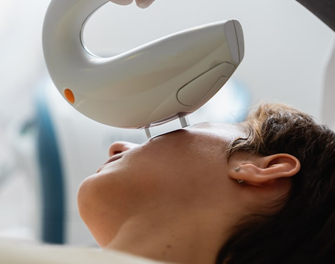
When carried out by a trained professional the IPL treatment is very safe. As with all procedures there is a small risk of side effects but these are rare. Side effects can include slight redness and swelling of the treated area, blistering or bruising and hyper or hypopigmentation. Any redness or swelling from the IPL treatment generally disappears within a few hours of treatment, and the remaining side effects are very rare. The London Dermatology Centre's dermatologists and aesthetic physicians will carry out a full assessment and patch test before any treatment takes place to alleviate these risks.
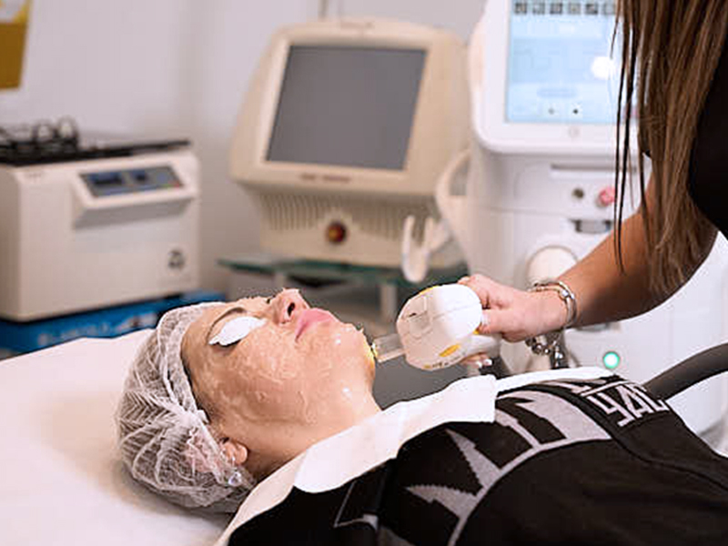
During the procedure you may experience a very slight pinging sensation as the IPL treatment head is passed over your skin. The sensation experienced by patients has been described as feeling like an elastic band being flicked on to the skin. Prior to your treatment you will do a patch test with one of our aesthetic practitioners. This is to ensure that you do not experience any adverse reaction and to check that your skin type is suitable for the IPL treatment. You will also be able to experience what the IPL treatment feels like. The IPL treatment is not painful and does not require any local anaesthetic to be applied prior to the treatment.

Patients with light sensitivity should not have IPL treatment. Its effects during pregnancy are unknown and it is safer to avoid the treatment if pregnant. We recommend that you minimise your sun exposure to prevent further damage and that you avoid tanning beds throughout the course of treatment. A sunscreen with an SPF of 25 or greater should be applied whenever the area is exposed to the sun. If you develop a tan within the proposed treated area, delay further treatments for 2 weeks or until the tan has significantly faded. Avoid excessive heat or friction to the treated area e.g. heavy exercise, saunas. Provided that there is no persistent redness, blistering, or crusting present in the treatment area you may resume all normal activities. You should not have IPL treatment whilst taking retinoids or for several months afterwards.

During your initial consultation at our rosacea clinic in London, your dermatologist will discuss your symptoms and their onset. They will also try to identify any patterns, such as times when the symptoms might worsen. It is best to come prepared, ready to answer questions about when your symptoms began and exactly what they consist of, especially if your symptoms are less noticeable on the day of your appointment.
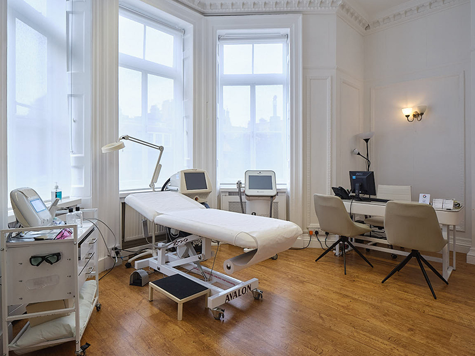
They will examine the affected area and will be able to diagnose exactly which type of psoriasis you have, or what is causing your skin to react. We are able to treat all types of psoriasis and skin conditions. After we have made a diagnosis, we may refer you for further testing such as allergy patch testing or prescribe medications, light therapy, topical creams and home care instructions.
Our aim is to make your symptoms as minimal as possible, with the most effective treatment plan for your condition.

Rosacea does not have an exact cure, but with the right treatment and care, we are confident we can make a big difference to your symptoms with a professional care plan. This can include helping you identify triggers and possible causes, as well as providing treatment options.
We want you to feel like your rosacea is not holding you back and give you the confidence to go on managing your symptoms at home, once your treatment with us is complete. We want to give you the support and direction needed to take control of your rosacea for good.
If possible, please bring a list of any skincare products or medications you're currently using. This helps our dermatologists better understand potential triggers and tailor your treatment plan.
Yes, all treatments are selected with skin sensitivity in mind. Our consultants will recommend options that calm inflammation without aggravating the skin barrier.
Yes, we provide vascular laser treatments to reduce persistent redness and visible blood vessels. These are carried out by experienced professionals using advanced medical-grade technology.
This depends on the type of treatment you've had. Your dermatologist will give you personalised aftercare advice, including when it’s safe to resume wearing makeup.
Yes, education on avoiding flare-ups is a key part of your consultation. We’ll help you identify common triggers and suggest skincare products suited to your condition.
While there is no permanent cure, rosacea can be effectively managed with the right treatment approach. Our goal is to minimise symptoms and keep flare-ups under control.
Yes, our dermatologists can assess and help manage rosacea that affects the eyes. If needed, we can also coordinate with ophthalmologists for more specialised care.
This varies depending on the treatment chosen and severity of symptoms. Many patients begin to see a noticeable difference within a few weeks of starting their plan.
If you are suffering from rosacea and would like to consult with one of our highly experienced dermatologists, get in touch with us now. You can also call us on 0207 467 3720.